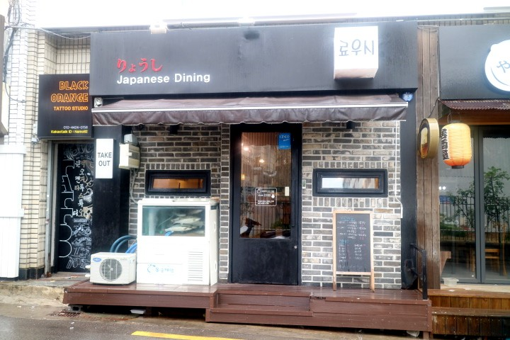
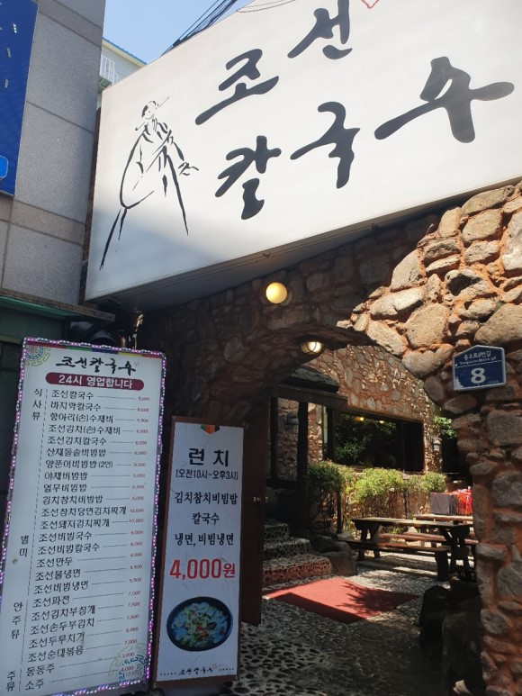
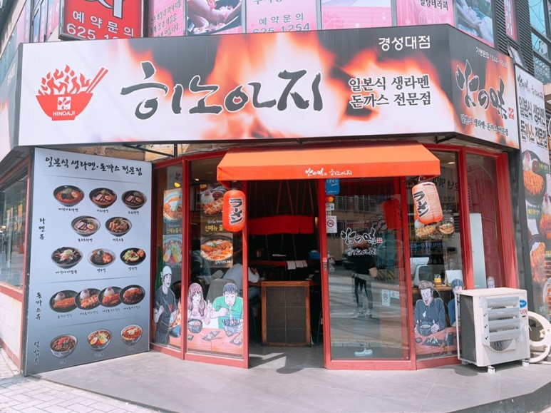

경성대 주변 밥집
유진이가 뽑은 Best3
- 료우시

메뉴
세트메뉴
새우세트:새우튀김+초밥10p+미니우동2 1.0
치킨세트:치킨샐러드+초밥20p+미니우동2 2.7
연어세트:연어샐러드+초밥20p+미니우동2 2.8
단품메뉴
런치초밥 0.9 초새우초밥 0.95
모듬초밥 1.3 유부초밥 0.6
특선초밥 1.7 소고기초밥 1.4
활어초밥 1.6 장어초밥 1.7
연어초밥 1.4 아부리초밥 1.8
생새우초밥 0.9
- 조선칼국수

메뉴
식사류
조선칼국수 0.5
바지락칼국수 0.6
항아리(손)수제비0.55
야채비빔밥0.5
별미
조선비빔국수0.6
조선비빔칼국수0.6
조선만두0.4
조선물냉면0.55
조선비빔냉면0.55
안주류
조선파전0.75
조선김치부침개0.75
- 히노아지

매뉴
라멘류
카라미소라멘 0.75
미소라멘0.75
소유라멘0.75
니꾸니꾸미소라멘0.85
냉모밀0.75
냉라멘0.75
돈까스류
돈까스정식0.85
치즈돈까스정식0.95
우동류
나가사키짬뽕0.75
히노아지어묵우동0.75
덮밥류
가츠동0.85
규동0.8